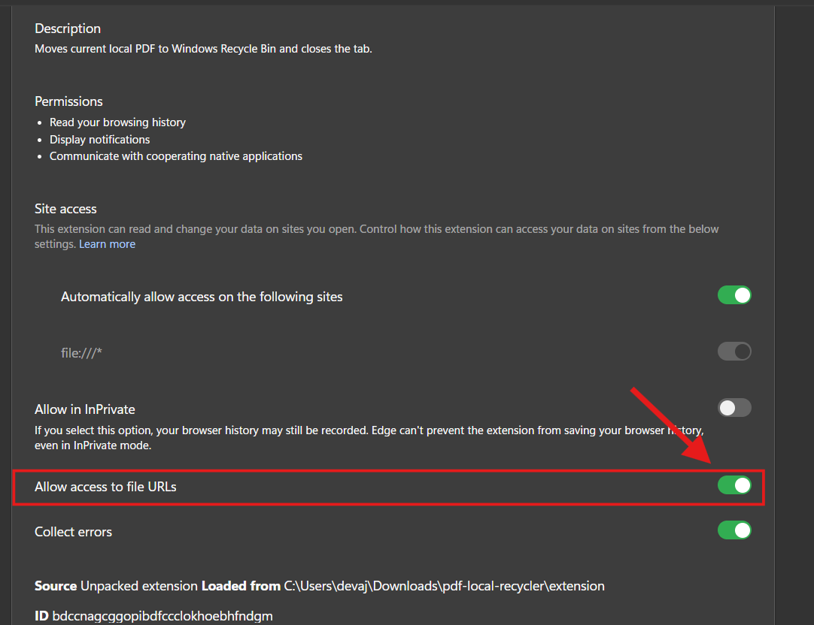

One Final Step! 🚀
To enable Windows Recycle Bin integration, install the lightweight PDF Deleter Windows Helper.
1. Click the button below to download PDFDeleterSetup.exe.
2. Run the downloaded file once (takes 2 seconds).
3. In Chrome, turn on Allow access to file URLs for this extension.

4. You are ready to recycle local PDFs with a single click!
⬇️ Download Windows Helper (.exe)